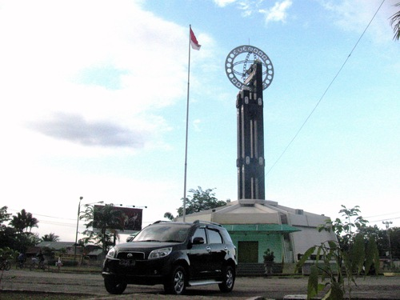

West Kalimantan
Equatorial Monument
Among all countries in the world, only twelve straddle the Equator. While among the countless cities within those twelve countries, only one sits right on this invisible line that separates the earth's southern from the northern hemisphere. Pontianak, capital of the province of West Kalimantan – formerly known as West Borneo - has the distinction of being the only city in the world that sits right on the Equator, a fact that needs no international approval nor agreement. This is the very reason why the Equatorial monument was built here, although Pontianak’s founder, Syarif Abdurrahman Alkadrie was not in the slightest aware of this fact. Using simple tools and methods, an unnamed Dutch geographer and explorer spearheaded a mission to find a city on the Equator. Eventually, in 1928, he found this city by the longest river in the Indonesian archipelago that was the sole urban setting right on the line of the Equator. He immediately marked the spot on the river bank of Kapuas Kecil (small Kapuas) with a simple pole and an arrow. Only 70 years later, when the monument had passed many renovations and reconstructions, that Indonesia's Agency for Applied Technology made precise studies, made corrections to the exact spot of the Equator using geographic positioning system. Although the difference proved to be quite considerable, yet admiration to the original team of explorers remains and will never be forgotten. The Equatorial monument was initially built from four ironwood pillars. The ironwood was locally obtained and constructed to keep up an arrow as symbol of orientation or reference. The Dutch word: ‘EVENAAR’ is clearly written on the arrow, meaning ‘equator’, or ‘Khatulistiwa’ in Bahasa Indonesia. It was later recorded that a globe was affixed to it in 1930, and a Dutch officer, by the name of Herman Neijenhuis was assigned to guard the monument from 1936 to 1940. Twice a year, the shadowless sunlight occurs here, as the sun reaches its zenith on the Vernal Equinox (March 21st – 23rd), and the Autumnal Equinox (September 21st – 23rd). These bi-annual events are comemorated here as visitors and locals enjoy a five-minute shadowless moment in the best ‘hot spot’ of Borneo. The word Borneo is believed to originate from a remark made by Pigafetta and the explorer Magellan’s companions in 1521, giving the name ‘Burne’ to the entire island , described as being an extremely large island, for it took the sailors three months to circumnavigate it. Today, Borneo is a land found to be rich in coal, oil, and gas deposits, and remains one of the largest remaining tropical rainforest reserves in Indonesia. While the town of Pontianak with its Equatorial Monument distinguishes itself as the only city in the world that sits right on that imaginary line called the Equator, separating the earth's northern from the southern hemisphere.
Singkawang
Located 145 km north of Pontianak , capital of West Kalimantan, Singkawang is the second largest city in the province, bordering the State of Sarawak, Malaysia. Unlike other towns in Indonesia, Singkawang has a distinct oriental atmosphere with hundreds of Chinese temples found around almost every corner of town. This is because over 70% of Singkawang’s population is of Chinese descent, predominantly of the Hakka tribe with some Teochew. Others are Malays, Dayaks and other Indonesian ethnic groups. In the 18th century, West Borneo lured many from mainland China to the gold mines at Monterado (today called the Bengkayang district). The Chinese came by the thousands, and on their way there they used to overnight in Singkawang. Most settled here and their descendents today form the majority population of Singkawang. One of the oldest temples here is the Tri Dharma Bumi Raya temple , established in 1878 dedicated to the god of the forest, or Tua Peh Kong. Normally a quiet city, Singkawang comes alive each Chinese New Year, reaching its climax at Cap Goh Meh, or the fifteenth day of Chinese New Year, closing the celebrations. For this event, Chinese from around the region, including those from Java and Sumatra but also from Singapore and Malaysia flock to Singkawang to celebrate the event with family and friends. During these celebrations the Tatung or Chinese shamans will perform their supernatural prowess to the thousands gathered along the streets, while remaining totally unharmed. However, before performing their feats they first pray for blessing at the temple of Toa Peh Kong. (Tatungs are people endowed with supernatural powers performing during the Cap Go Meh Festival in Singkawang, ‘the city of a thousand shrines’, in West Kalimantan. Two of the tatungs are seen bending a sharp sword with their abdomen, remaining completely unharmed.) Singkawang is also famous for its Chinese ceramics, still produced in the old style with “antique” designs. Center for ceramics is at Sa Kok, some 7 km. from Singkawang. Ceramics made in Singkawang is very popular on Java and can be bought in many parts of Jakarta and Surabaya.

The Longhouse and the Dayak Way of Life
When travelling up the Kapuas River, you will pass typical Dayak longhouses, with smoke wafting from atop roofs disappearing behind leafy ferns and rows of coconut trees. Inside, mothers will have just extracted the coconut juice to prepare a big dinner that smells most inviting. A Dayak longhouse consists of more than 50 rooms with many kitchens, making it one of the largest houses built. Although many may look delapidated, nonetheless, they are very sturdy, most built decades ago, and are made of strong ironwood. The Dayaks are the original inhabitants native to Kalimantan, this large island which was once better known as “Borneo”. They live in the interior upper regions of this huge island, amidst dense rainforests and along banks of wide rivers. Once feared for their headhunting raids, the Dayaks today live peacefully from agriculture, forest products, weaving and wood carving. The Dayak longhouse is a large communal dwelling, where an entire community of extended families resides. These longhouses, known as betang or lamin, are normally located along river banks and are built on strong posts raised above the seasonal flooding. Such longhouses, therefore, are usually built on 5 meters and sometimes even 8 meter posts, while entry to the house is by a tangka or ladder, notched into a huge log. As the ladder is pretty precarious, visitors must be careful when climbing. The river is necessary for the community for the supply of water and food, and of course as a means for travel, and communications with the outside world. But today such longhouses are fast disappearing or falling into disuse as people prefer to live in smaller homes rather in one large communal dwelling. One longhouse takes a large number of families. The longhouse at Putussibau, in the upper region of the Kapuas river, for example, counts 54 cubicles, called bilik,for as many families. There is however one long veranda set aside for communal meetings, rituals, ceremonies, cultural performances or other common activities, where daily, women may be seen busy weaving and the men carving their intricate woodwork. The longhouse, therefore, provides shelter and builds a framework for continuous, informal contacts and harmonious social relations. In these houses, each family is assigned the tasks of taking care of communal safety, each must be involved in ceremonies and rituals. In all, there is a division of labour but also emphasis is on cooperation. Nevertheless, distinction is still made between aristocrats and commoners. The leader is positioned in the center of the house, with the lowest ranking on the outer side near the entrance But, if you are not prepared to visit these tribal, long, train-like dwellings, a replica longhouse has been built for visitors in downtown Pontianak on Jalan M.T. Haryono. Standing inside and under this house, you can picture in your mind how incredible it must be if you were in the genuine dwelling itself together with some 50-odd families and livestock living below deck. This, together with the river cruise and sincere hospitality of the Dayak, would be an exceptional experience indeed.